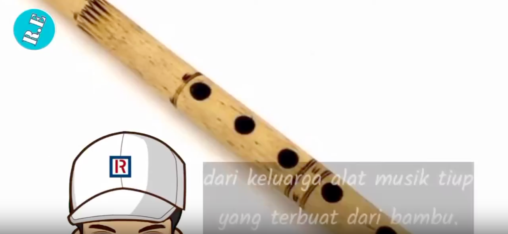
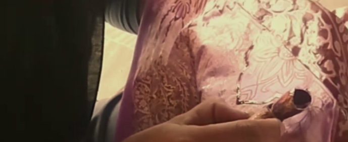

S5b · Entry detail · /d/[slug]/[id]
empu.
alat musik tiup
Instruments
tiup · wind section
New term
Also heard as tiupan

2:46–2:47·
Spoken·
Timed by speech recognition
Original frame · cropped with SAM 3.1
Said at 2:46
“Suling merupakan alat dari keluarga alat musik tiup yang terbuat dari bambu.”
Meaning
English
Wind instrument family
Bahasa Indonesia
Kelompok instrumen tiup
Confidence
●●●High confidence
Spoken
Validated by the documenter
Heard in 2 recordings
{{ o.title }}
{{ o.time }}
{{ o.src }}
Source
Gamelan part 2
Recorded by Syafiq · own recording · shared publicly with consent
S5 · Dictionary · /d/[slug]
empu.
Home / Living Archive
Living Archive · Gamelan
53 validated terms · 3 recordings · gamelan-jawa v1 · Recorded by Syafiq and contributors
{{ g.name }}
{{ g.count }} termsNo terms match these filters.
S1 · Home · /
empu.
Capture what masters know, before it's gone.
Empu turns a master's narrated work video into a watchable craft dictionary. Every term links to the original speech, a short clip of the movement, and the real tool, cropped from the original frame. AI proposes; a person decides.

From the archive
batik tulis
Hand-drawn batik, wax applied with a canting
Spoken●●● High confidence
Archives
How it works
{{ s.n }}
 {{ s.text }}
{{ s.text }}
Principles
Evidence with every term.
Every source labeled.
Nothing public without a person's approval.
Original frames only.
Batik today. Weaving and gamelan next. Every craft that was never written down.
Frames from "Proses nyanting batik tulis" by TEBAK teras batik kaindra and "Macam Canting dalam Batik Tulis" by Batik Education, both CC BY 3.0 on YouTube. Trimmed by Empu.
Built for the Meta Global AI Developer Hackathon 2026 with Muse Spark 1.3 and SAM 3.1. Demo clips are CC BY videos, credited on every entry.